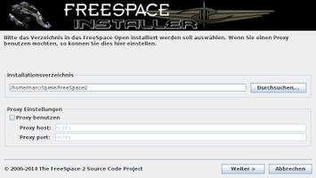
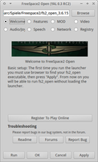
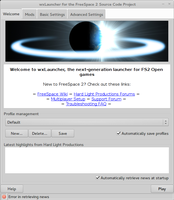

Installation
Dieser Artikel wurde für die folgenden Ubuntu-Versionen getestet:
Ubuntu 16.04 Xenial Xerus
Ubuntu 14.04 Trusty Tahr
Zum Verständnis dieses Artikels sind folgende Seiten hilfreich:
Freespace 2 Open setzt sich aus den Original-Spielinhalten und der freien Spielengine zusammen. Die Spielinhalte sind nicht kostenlos verfügbar, können aber von den "Freespace 2"-Spiel-CDs kopiert oder einer der käuflich zu erwerbenden Download-Versionen entnommen werden. Dieser Artikel beschreibt die verschiedenen Möglichkeiten, Spielinhalte und -engine zu installieren.
Vorbereitung¶
Vor der Spielinstallation müssen einige Pakete eingerichtet werden, damit das Spiel lauffähig ist. Außerdem ist ein Grafiktreiber mit 3D-Beschleunigung erforderlich.
32-Bit-System¶
Wer eine 32-Bit-Version von Ubuntu benutzt, installiert [1] folgende Pakete:
libjansson4
liblua5.1-0
libopenal1
libsdl1.2debian
libsdl1.2-dev
 mit apturl
mit apturl
Paketliste zum Kopieren:
sudo apt-get install libjansson4 liblua5.1-0 libopenal1 libsdl1.2debian libsdl1.2-dev
sudo aptitude install libjansson4 liblua5.1-0 libopenal1 libsdl1.2debian libsdl1.2-dev
64-Bit-System¶
Benutzer eines 64-Bit-Systems müssen folgende Pakete installieren [1]:
libasound2:i386 (32-Bit-Paket)
libasyncns0:i386 (32-Bit-Paket)
libavahi-client-dev:i386 (32-Bit-Paket)
libc6:i386 (32-Bit-Paket)
libcaca0:i386 (32-Bit-Paket)
libdbus-1-3:i386 (32-Bit-Paket)
libflac8:i386 (32-Bit-Paket)
libgcc1:i386 (32-Bit-Paket)
libglu1-mesa:i386 (32-Bit-Paket)
libjansson4:i386 (32-Bit-Paket)
libjpeg-turbo8:i386 (32-Bit-Paket)
libjson-c2:i386 (32-Bit-Paket)
liblua5.1-0:i386 (32-Bit-Paket)
libncursesw5:i386 (32-Bit-Paket)
libogg0:i386 (32-Bit-Paket)
libopenal1:i386 (32-Bit-Paket)
libpng12-0:i386 (32-Bit-Paket)
libpulse0:i386 (32-Bit-Paket)
libpulse-dev:i386 (32-Bit-Paket)
libsdl1.2debian:i386 (32-Bit-Paket)
libsdl1.2-dev:i386 (32-Bit-Paket)
libslang2:i386 (32-Bit-Paket)
libsndfile1:i386 (32-Bit-Paket)
libstdc++6:i386 (32-Bit-Paket)
libtheora0:i386 (32-Bit-Paket)
libtinfo5:i386 (32-Bit-Paket)
libvorbis0a:i386 (32-Bit-Paket)
libvorbisenc2:i386 (32-Bit-Paket)
libvorbisfile3:i386 (32-Bit-Paket)
libwrap0:i386 (32-Bit-Paket)
libx11-6:i386 (32-Bit-Paket)
libxau6:i386 (32-Bit-Paket)
libxcb1:i386 (32-Bit-Paket)
libxdmcp6:i386 (32-Bit-Paket)
libxext6:i386 (32-Bit-Paket)
zlib1g:i386 (32-Bit-Paket)
mit apturl
Paketliste zum Kopieren:
sudo apt-get install libasound2:i386 libasyncns0:i386 libavahi-client-dev:i386 libc6:i386 libcaca0:i386 libdbus-1-3:i386 libflac8:i386 libgcc1:i386 libglu1-mesa:i386 libjansson4:i386 libjpeg-turbo8:i386 libjson-c2:i386 liblua5.1-0:i386 libncursesw5:i386 libogg0:i386 libopenal1:i386 libpng12-0:i386 libpulse0:i386 libpulse-dev:i386 libsdl1.2debian:i386 libsdl1.2-dev:i386 libslang2:i386 libsndfile1:i386 libstdc++6:i386 libtheora0:i386 libtinfo5:i386 libvorbis0a:i386 libvorbisenc2:i386 libvorbisfile3:i386 libwrap0:i386 libx11-6:i386 libxau6:i386 libxcb1:i386 libxdmcp6:i386 libxext6:i386 zlib1g:i386
sudo aptitude install libasound2:i386 libasyncns0:i386 libavahi-client-dev:i386 libc6:i386 libcaca0:i386 libdbus-1-3:i386 libflac8:i386 libgcc1:i386 libglu1-mesa:i386 libjansson4:i386 libjpeg-turbo8:i386 libjson-c2:i386 liblua5.1-0:i386 libncursesw5:i386 libogg0:i386 libopenal1:i386 libpng12-0:i386 libpulse0:i386 libpulse-dev:i386 libsdl1.2debian:i386 libsdl1.2-dev:i386 libslang2:i386 libsndfile1:i386 libstdc++6:i386 libtheora0:i386 libtinfo5:i386 libvorbis0a:i386 libvorbisenc2:i386 libvorbisfile3:i386 libwrap0:i386 libx11-6:i386 libxau6:i386 libxcb1:i386 libxdmcp6:i386 libxext6:i386 zlib1g:i386
Inhalte¶
CD-Version¶
Ist man im Besitz der CDs des Spiels, ist es am einfachsten, es mit Wine zu installieren [2]. Alternativ können die benötigten Dateien auch direkt von den CDs in ein Verzeichnis kopiert werden. Hierzu zwei Verzeichnisse anlegen. Zum Einen das Installationsverzeichnis ~/Spiele/Freespace2, welches die Spielinhalte beinhalten wird, sowie das Arbeitsverzeichnis ~/Free_temp.
Zuerst alle Dateien von den CD's in das Arbeitsverzeichnis kopieren:
| Arbeitsverzeichnis | |
| Datenträger | Benötigte Dateien |
| CD 1 | data1.cab, data1.hdr und aus dem Ordner manual das Handbuch MANUALGER.pdf. |
| CD 2 | *.vp und data2.cab |
| CD 3 | *.vp und data3.cab |
Hinweis:
Sofern man die Videodateien selber konvertieren möchte sind alle .MVE-Dateien von CD 2 und CD 3 erforderlich..
Die benötigten Spielinhalte im Terminal [3] mittels unshield entpacken [4]:
unshield -L x data1.hdr
Nachdem die 128 Dateien angelegt wurden, aus den folgenden Verzeichnissen die gewünschten Dateien in das Installationsverzeichnis verschieben:
| Spielinhalte | |
| Ordner | Benötigte Dateien |
| Arbeitsverzeichnis | *.vp |
| basic_install_files | *.vp |
| high_res_files | *.vp |
| intel_anims | *.vp |
| music_compressed | *.vp |
Die Ordner data, data2 und data3 anlegen. Anschließend alle .vp-Dateien nach dem folgenden Muster auf die folgenden Ordner verteilen. Hier beachten, dass manche Dateien doppelt vorkommen.
| Spielinhalte | |
| Ordner | Benötigte Dateien |
| Installationsverzeichnis | root_fs2.vp , sparky_hi_fs2.vp, tango2_fs2.vp, tangoB_fs2.vp, smarty_fs2.vp, stu_fs2.vp, tango3_fs2.vp, warble_fs2.vp, sparky_fs2.vp, tango1_fs2.vp und tangoA_fs2.vp. |
| data2 | tango1_fs2.vp und warble_fs2.vp. |
| data3 | tango2_fs2.vp, tango3_fs2.vp und warble_fs2.vp. |
Das Arbeitsverzeichnis kann nun gelöscht werden.
Desura¶
Das Spiel kann über die Internetseite oder den Client zur Spieleliste hinzugefügt und gestartet werden. [5]
GOG.com¶
Die englische Version des Original-Spiels "Freespace 2" kann im Online-Shop GOG.com erworben werden. Um die Spieldateien zu erhalten, kopiert man die Installationsdatei in ein Verzeichnis, wohin das Spiel installiert werden soll, und entpackt sie im Terminal [3] mit innoextract [6]:
innoextract -L setup_freespace_2.exe
Damit spart man sich gleichzeitig den Schritt, später die Dateinamen in Kleinbuchstaben umzuwandeln. Die Spieldateien befinden sich nun im Unterverzeichnis app. Dies ist das Spielverzeichnis, daher gibt man diesem nun einen aussagekräftigen Namen wie Freespace 2.
Alternativ kann man die Installationsdatei setup_freespace_2.exe statt mit innoextract auch mit Wine ausführen. [2]
Engine¶
Um das Spiel mit Linux starten zu können, benötigt man ein zusätzliches Programm. Dies lässt sich auf verschiedene Weisen einrichten:
Binärdateien¶
Die Fan-Gemeinde bietet Binärdateien im Forum des "FreeSpace Source Code Project"  an, wo die aktuelle Version im oberen Bereich mit dem Schriftzug "Release" markiert ist. Die aktuelle Version ist unter fs2downloads.com
an, wo die aktuelle Version im oberen Bereich mit dem Schriftzug "Release" markiert ist. Die aktuelle Version ist unter fs2downloads.com  zu finden. Die darin enthaltenen Dateien müssen ins "Freespace 2"-Spielverzeichnis entpackt werden. [7]
zu finden. Die darin enthaltenen Dateien müssen ins "Freespace 2"-Spielverzeichnis entpackt werden. [7]
Um sich bei späteren Programmaufrufen nicht stets die Versionsnummer merken zu müssen, erstellt man eine Verknüpfung mit einem einfachen Namen wie fs2_open, wobei die Verzeichnis- und Dateinamen natürlich entsprechend angepasst werden müssen. Die Aufrufe erfolgen im Terminal [3]:
cd '/Pfad/des/Spielverzeichnisses' ln -s fs2_open_VERSION fs2_open
Zusätzlich muss die verlinkte Datei noch als ausführbar markiert werden [8]:
chmod +x fs2_open_VERSION
Quellcode¶
Alternativ zu den fertigen Binaries kann die aktuelle Version der Engine auch manuell kompiliert werden. Hierzu müssen folgenden Pakete vorher installiert [1] werden:
autoconf
automake1.10
build-essential
libjansson-dev
libjpeg62-dev
liblua5.1-0-dev
libogg-dev
libopenal-dev
libpng12-dev
libreadline6-dev
libsdl1.2-dev
libtheora-dev
libvorbis-dev
mit apturl
Paketliste zum Kopieren:
sudo apt-get install autoconf automake1.10 build-essential libjansson-dev libjpeg62-dev liblua5.1-0-dev libogg-dev libopenal-dev libpng12-dev libreadline6-dev libsdl1.2-dev libtheora-dev libvorbis-dev
sudo aptitude install autoconf automake1.10 build-essential libjansson-dev libjpeg62-dev liblua5.1-0-dev libogg-dev libopenal-dev libpng12-dev libreadline6-dev libsdl1.2-dev libtheora-dev libvorbis-dev
SVN-Version¶
Hierzu muss folgendes Paket vorher installiert [1] werden:
libqt4-dev
mit apturl
Paketliste zum Kopieren:
sudo apt-get install libqt4-dev
sudo aptitude install libqt4-dev
Zum Auschecken (Herunterladen) des Quellcodes muss außerdem Subversion installiert sein. Den aktuellen Quellcode mithilfe des Terminals [3] auschecken:
svn checkout svn://svn.icculus.org/fs2open/trunk/fs2_open
und übersetzen [9]:
cd fs2_open ./autogen.sh make
Anschließend die ausführbare Datei fs2_open_3.6.X vom Ordner fs2_open/code in den Freespace2 Ordner kopieren.
Inferno- und Debug-Builds¶
Alternativ dazu lässt sich Freespace2 auch als "Inferno-Build" kompilieren. Diese Variante erhöht das Limit an erlaubten Schiffen in einem Einsatz (z.B. in Multiplayer Runden). Da sich der Inferno-Build mehr und mehr zum Multiplayer-Standard durchsetzt, ist dieser dem "normalen" Build in jedem Fall vorzuziehen:
cd fs2_open ./autogen.sh ./configure --enable-inferno make
Um das bei Bugreports oft geforderte fs_open.log, welches Warnungen und Fehlerhinweise enthält, zu erhalten, ist es der sogenannte Debug-Build erforderlich:
cd fs2_open ./autogen.sh ./configure --enable-inferno --enable-debug make
Die Ausgaben des Debugging liegen unter ~/.fs2_open/.
Experten-Info:
Die Datei autogen.sh dient als Ersatz für das sonst übliche configure. Nachdem sie ausgeführt wurde, steht configure zur Verfügung, das jedoch nur erneut ausgeführt werden braucht, wenn man spezielle configure-Optionen nutzen will (siehe [9]).
Dateien anpassen¶
Dateinamen in Kleinbuchstaben¶
Alle Spieldateien müssen in Kleinbuchstaben gehalten sein. Damit man man bei der Vielzahl der Dateien nicht jede einzeln umbenennen muss, lässt man am besten ein für diesen Zweck geschriebenes Programm wie Krename (besonders für Kubuntu geeignet) oder pyRenamer (besonders für Nutzer anderer Oberflächen) die Arbeit verrichten.
Zugriffsrechte anpassen¶
Verzeichnisse und Dateien müssen möglicherweise noch Leserechte gewähren [8]:
cd '/Pfad/des/Spielverzeichnisses' find -type d -print0 | xargs -0 chmod +rx find -type f -print0 | xargs -0 chmod +r
Videosequenzen abspielen¶
Das Original-Spiel enthält zwar bereits alle Videos, allerdings im geschlossenen .MVE-Format (Infinity Engine Movie File) von BioWare, das von der Linux-Version nicht abgespielt werden kann. Die Zwischensequenzen des Spiels lassen sich jedoch im freien .OGG-Format herunterladen und danach innerhalb des Spiels, aber auch mit jedem beliebigen Videoplayer abspielen. Sie werden in den Ordner data/movies im Spielverzeichnis von Freespace 2 entpackt [6]. Dieser Ordner muss erst erstellt werden:
cd /Pfad/des/Spielverzeichnisses mkdir data/movies
Alternativ können die MVE-Dateien auch mit FFmpeg umgewandelt werden.
Optional: Modifikationen¶
Die Fan-Gemeinde bietet verbesserte Spielinhalte wie Texturen, Modelle oder Musik an, welche die seit der Veröffentlichung des Orginal-Spiels gestiegenen technischen Möglichkeiten ausschöpfen. Spielern mit leistungsschwachen Rechnern ist die Benutzung dieser Verbesserungen daher nicht zu empfehlen. Darüber hinaus gibt es weitere Modifikationen wie neue Missionen, Spielengines und mehr. Es gibt verschiedene Möglichkeiten, solche Inhalte zu installieren.
Hinweis:
Einige Modifikationen wie Freespace Port (eine Möglichkeit die Kampagne von Freespace1 mit der Engine von Freespace2 zu spielen) verursachen derzeit Schwierigkeiten bei Verwendung deutscher Installationsdateien: So kann es in besagter Modifikation zu einem Absturz beim Start von Mission 10 ("First Strike"/"Erster Angriff") kommen. Dies liegt an einem Verarbeitungsfehler der Mod, da im deutschen anstatt "Shivans" das Wort "Shivaner" verwendet wird. In Foren wird deshalb meistens empfohlen sich die englische Variante zu besorgen. Die (etwas komplexe) Umgehung des Fehlers ist unter Konfiguration zu finden.
Manuelle Installation am Beispiel der mediavps-Verbesserungen¶
Möchte man diese Verbesserungen installieren, legt man im "Freespace 2"-Spielverzeichnis ein neues Verzeichnis an, das üblicherweise den Namen mediavps trägt. Heruntergeladen werden können die Dateien kostenlos im Forum des "FreeSpace Upgrade Project" , wo die aktuelle Version im oberen Bereich mit dem Schriftzug "RELEASE" markiert ist. Derzeit ist dies die Version 3.6.12 (Stand November 2012). Es müssen mindestens die Archive MediaVPs_xxxx.zip und MV_Root_xxxx.zip heruntergeladen werden, wobei xxxx in dieser Anleitung die Versionsziffern der Verbesserungen repräsentiert. Zusätzlich werden alle Archive mit dem Namensbestandteil Update benötigt, sofern man das dazugehörige Basisarchiv ebenfalls heruntergeladen hat. Anschließend werden die in den Archiven enthaltenen Dateien entpackt [7] und direkt in das Verzeichnis kopiert, in dieser Anleitung also in mediavps.
Damit die Verbesserungen tatsächlich im Spiel benutzt werden, gibt man den Namen des Verzeichnisses beim Programmaufruf an:
fs2_open -mod mediavps
|  |
| FSO Installer |
Download von Erweiterungen mit dem Java-Installer¶
Der Java-Installer kann von fsoinstaller.com heruntergeladen werden. Es ist zu empfehlen, den Installer mit dem proprietären Oracle-Java zu starten, da das Programm mit OpenJDK schlecht bedienbar ist. Weitere Informationen dazu im Forum.
java -jar FreeSpaceOpeninstaller.jar
Dort kann man nach Angabe des Installationsverzeichnisses grundlegend, "alles" oder optionale Ergänzungen installieren lassen. Es wird auch die aktuelle Spieleengine installiert. Andere/ältere Varianten können bei Bedarf von Hand heruntergeladen bzw. kompiliert werden, wie in den entsprechenden vorherigen Abschnitten erklärt. Die Engines für Windows und Macintosh sind für die native Linux-Version natürlich verzichtbar.
Start¶
Es gibt verschiedene Möglichkeiten, das Spiel zu starten. Beim ersten Start wird der versteckte Ordner ~/.fs2_open/ im Homeverzeichnis angelegt.
Befehl¶
Zum Starten des Spiels muss man die Ausführungsdatei der Linux-Version ausführen [10] (oder die vorher erstellte Verknüpfung fs2_open aufrufen). Parameter, z.B. um das Spiel im Fenstermodus zu spielen oder um noch weitere Spieldateien und Kampagnen beim Spielstart zu laden, finden sich im Artikel Freespace 2/Konfiguration.
|  |
| Yet Another Launcher |
Yet Another Launcher¶
YAL ist ein Starter, der vor dem Spielstart viele Einstellungen mit einer komfortablen grafischen Oberfläche anbietet. Für die Übersetzung muss SVN installiert sein. Den aktuellen Quellcode mithilfe des Terminals [3] herunterladen und kompilieren [9]:
svn co svn://vega.livecd.pl/yal cd yal/trunk ./build-all.sh
Unter yal/trunk/bin ist der benötigte Starter fs2_launcher zu finden. Diesen in das Installationsverzeichnis kopieren und den Menüeintrag erstellen.
|  |
| wxlauncher |
wxlauncher¶
Der wxlauncher 0.9.4 ist in den Repositories ab Trusty vorhanden:
freespace2-launcher-wxlauncher
mit apturl
Paketliste zum Kopieren:
sudo apt-get install freespace2-launcher-wxlauncher
sudo aptitude install freespace2-launcher-wxlauncher
Es wird auch das Paket freespace2 mit der in den jeweiligen Repos vorhandenen Spieleengine als Abhängigkeit installiert. Die Engine liegt dann unter /usr/games/ und muss bei Bedarf ins Spieleverzeichnis kopiert werden. Der wxlauncher kann im Terminal über
wxlauncher &
oder über einen Menüeintrag aufgerufen werden.
Menüeintrag¶
Man kann sich auch mit einem Menüeditor einen Menüeintrag anlegen. Als Symbol bietet sich das hier im Wiki verlinkte Logo an: fs2_open.png
Alternativ erstellt man mit einem Texteditor [11] einen Programmstarter [12] und speichert den folgenden Inhalt, natürlich entsprechend angepasst, z.B. als ~/.local/share/applications/freespace2.desktop.
[Desktop Entry] Name=FreeSpace 2 Open Comment=Beliebte Weltraum-Kampfsimulation. Exec='/Pfad/des/Spielverzeichnisses/fs2_open' # fs2_open muss hier durch fs2_launcher ersetzt werden, wenn man YAL verwenden möchte. Icon=/Pfad/zum/Icon Path=/Pfad/des/Spielverzeichnisses Terminal=false Type=Application Categories=Game

Infobox¶
| FreeSpace 2 | |
| Originaltitel: | Freespace 2 |
| Genre: | Raumkampfsimulation |
| Sprache: |  |
| Veröffentlichung: | 1999 |
| Publisher: | Interplay Entertainment Inc. |
| Systemvoraussetzungen: | 200 MHz Prozessor / 32 MB RAM / 400 MB Festplattenspeicher |
| Medien: | CD (3) / Download |
| Strichcode / EAN / GTIN: | 4020636109379 |
| Läuft mit: | nativ |
Links¶
Englische Installationsanleitung
(ausführlicher) Blue Planet komplett
- Age of Aquarius (AoA/2007) / War in Heaven (WiH/2010)

{kind=link}
- Erstellt mit Inyoka
-
 2004 – 2017 ubuntuusers.de • Einige Rechte vorbehalten
2004 – 2017 ubuntuusers.de • Einige Rechte vorbehalten
Lizenz • Kontakt • Datenschutz • Impressum • Serverstatus -
Serverhousing gespendet von